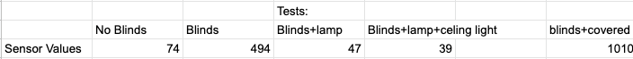

PHYS S-12: Introduction to Digital Fabrication
Nicola Hensch
Week 7: Electronic input devices
Assignment
- Use sensors found in the kit to measure a physical quantity with your microcontroller.
- Make another sensor that measures a physical quantity with your microcontroller, but using copper or aluminum foil.
Photoresistor
For my first sensor, I decided to make a photoresistor because I might want to use one for my final project. A photoresistor works in a voltage divider and changes its resistance depending on the light of the room its placed in. For my circuit I decided to follow the example found on our course web page which was clear and simple (shown below). However, I had a lot of difficulty calibrating my sensor once I had it up and running. The code that I used to read out the values/resistance is shown below.

void setup() {
// initialize serial communication at 9600 bits per second:
Serial.begin(9600);
}
void loop() {
int sensorValue = analogRead(A0); // read the input on analog pin 0
// "sensorValue" is just a variable name I made up.
Serial.println(sensorValue); // send the result out to the computer.
delay(100); // Delay 100 milliseconds = 0.1 second.
//slows it down so we can tell what's going on.
}
This code was given on the course website as well. Once I had the code uploaded to the board, I had to test to see if the values were changing according to the light. When I first opened the serial monitor, however, I realized that the starting/base value was quite low, right around 70. I tried resetting the board but that did not seem to work, so I thought about what could be causing the value to be so low. I eventually realized that the photoresistor was reading the sunlight from my windows, thus making the value/resistance low. I fixed this by closing all my blinds and that brought up the base value to 870. Knowing that I want the base value to be around 512, since 1023 is the max, I started changing the resistors to dial in the sensor. I started with a 47K reistor, then a 10K, and lastly a 100k resistor. The 10 K resistor brought the base value to right around 1000, so I knew that I would have to increase my resistor. When I tried the 100K resistor, the serial monitor values jumped down to around 490. I believe it was lower than 512 because of the light from my computer, which is a difficult factor to eliminate. Once I had the sensor dialed in, I tested it with different light scenarios in my room. The tests were a desk lamp, desk lamp and ceiling light, and covering the sensor entirely. My findings are shown below in the table.
Capacitive Sensor
For my second sensor I decided to make a capacitative sensor that when an object got close to it, an LED would turn on. I chose to do this because I might integrate something similar into my final project. I started out by making the same capicitative circuit that can be found on the course website. I then added a green LED to the number 3 pin which was in series with a 10K resistor. Before I added the LED, I had to test to see if the Capacitive sensor was working in the first place. When I tried this last class, values on the serial plotter appeared to decrease as I got close to the sensor which is not what is supposed to happen. Luckily, when I tested the sensor this time, it appeared to be in working order. Next, I had to figure out my range for the capicitative sensor so I could have a good interval for turning on the Green LED. The highest I was able to get my sensor to read was around 300 and that only occuered when I touched it. As I mentioned before, I wanted to try this sensor with an LED because i thought I could integrate it into my final project, an RC car. I was hoping that a red LED would light up when I got too close to an object, therefore giving a warning to the driver before they crash. That means that I want the LED to turn on before I hit the sensor. I landed on the value of 30 because I thought that anything higher than that would be too late of a warning to prevent a crash for my final project. Below is a video of my serial plotter and LED turning on, a photo of my circuit and the code I used.

#include CapacitiveSensor.h
CapacitiveSensor Sensor = CapacitiveSensor(7,5); //7 is charge pin. 5 is sense pin.
int Green = 3;
void setup() {
Serial.begin(9600);
pinMode(Green, OUTPUT);
}
void loop() {
long sensorValue = Sensor.capacitiveSensor(1000);
//Change the number of samples to get the required timing and sensitivity.
//delay(10);
Serial.println(sensorValue);
if(sensorValue > 30) {
digitalWrite(Green, HIGH);
}else{
digitalWrite(Green, LOW);
}
}